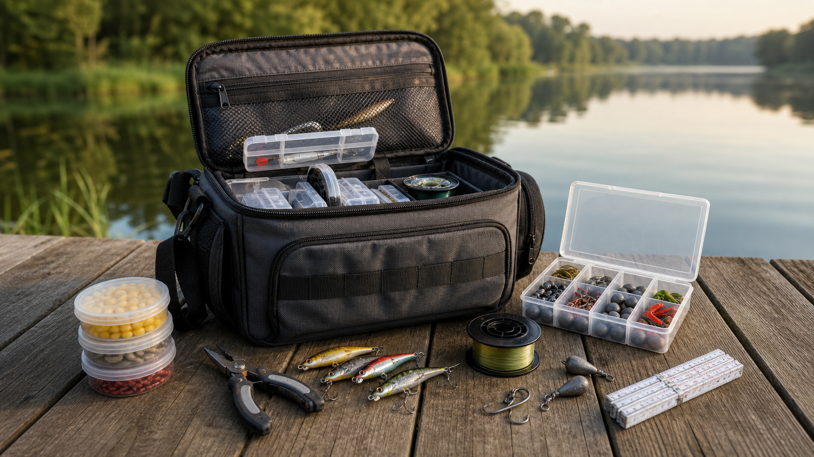

Rod
Rods between 2.40-3.60 m are flexible starters for shore and lake fishing.
BasicGear changes depending on the fish you target, but a balanced, simple and durable setup is enough for beginners.
A good tackle bag keeps hooks, sinkers, line, tools and lures separated so you can change rigs quickly without searching through loose gear.

Rods between 2.40-3.60 m are flexible starters for shore and lake fishing.
BasicA 2500-4000 size reel is useful for light spinning and shore fishing.
DurableChoose hooks by fish size; check your line often for knots and abrasion.
ControlWorms, dough, shrimp, plugs or soft lures should match the target species.
ChoiceSmall shoulder bags are enough for hooks, one spare line spool, pliers and a few lures.
Hard tackle boxes keep small parts visible and prevent hooks from mixing with soft bait.
Backpack tackle bags are better when you carry water, food, rain gear and extra rigs.